КРЫША, ПАНЕЛИ ЗАДКА И ЗАДНЕГО ПОЛА КУЗОВА
КРЫША
ОБЩЕЕ ОПИСАНИЕ
- Герметизация точечной сварки
Деформация
панели крыши сразу отражается на внешнем виде автомобиля. Прежде чем
менять крышу, удостоверьтесь, что кузов установлен горизонтально. Прежде
чем приваривать панель крыши, отрегулировать кромки внутренней панели
боковины так, чтобы они касались панели крыши. Обращайте особое внимание
на перекручивание и параллельность.
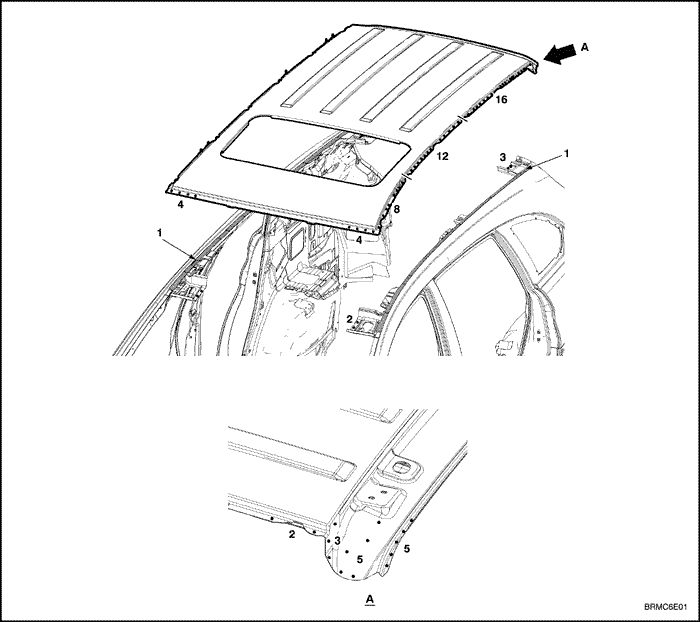


ПРОЦЕДУРА РЕМОНТА
- Снимите соответствующие части.
- Плафон освещения салона, уплотнитель двери и обивка стойки.
- Обивка потолка и жгут проводов.
- Стеклоочиститель, облицовка рамы ветрового стекла и ветровое стекло.
- Дверь багажника и другие детали.
- Вытяните и выправьте поврежденные места приблизительно до исходной формы.
- С помощью захватов прикрепить автомобиль к правильному стенду за горизонтальные швы контактной сварки.
- Прежде чем отрезать панель крыши, вытяните поврежденные части до первоначальной формы.
- Не вытягивайте больше нужного.
- Вытяните и выправьте поврежденные части приблизительно до исходной формы.
- Удерживайте кузов в горизонтальном положении.
- Поднимите кузов домкратами и установите страховочные опоры в четырех обозначенных точках внутренней панели боковины.
- Отрежьте и отделите панель крыши.
- Отрежьте ножовкой и ножницами сварочные кромки крыши на уровне панели крыши и каркаса крыши.
- Зубилом отделить панель крыши по жирным линиям (см. рисунок).
- Накернить точки вокруг точек сварки на сварочной кромке крыши.
- Высверлите отверстия с помощью специального инструмента.
- С помощью зубила и дисковой шлифовальной машины отделить приваренный край от передней и задней стоек кузова и панели крыши.
- Выровняйте и зашлифуйте неровности на сварочных кромках дисковой шлифовальной машиной.
- Снимите герметизирующую ленту.
- Отделите герметизирующую ленту на приваренных местах внутренней панели боковины стальным шпателем.
- Отрихтуйте поврежденные смежные части.
- С помощью молотка и оправки отрихтуйте поврежденные участки внутренних частей передней и задней стоек и внутренней панели боковины.
- С помощью молотка и оправки выровнять сварочные кромки так, чтобы они плотно прилегали к сварочной кромке панели крыши.
- Заварите высверленные отверстия.
- Установите новые панели.
- Дисковой шлифовальной машиной зачистите от краски до стального листа обе стороны привариваемых участков верхнего обрамления ветрового стекла, опоры панели крыши, каркаса задней части панели крыши и панели крыши.
- Временно установите панель крыши и зафиксируйте зажимными устройствами.
- Измерить область ветрового стекла по диагоналям следящим измерителем или выпуклой линейкой, как показано, чтобы проверить ее на перекручивание или изгиб.
- Выполните основную сварку и шлифовку.
- Сначала выполните пробную сварку и проверьте качество сварки.
- Увеличьте количество точек на 20% для свариваемых областей.
- С помощью молотка и оправки выровняйте сварные точки у ветрового и заднего стекла.
- Отрезать лишние и неправильные кромки и выровнять кромки, чтобы они плотно прилегали к поверхности панели крыши.
- Наложите герметизирующую ленту. См. раздел 9, "Уплотнение, замазка и шумоизоляция".
- Наложите герметизирующую ленту на места сварки.
- Нанесите краску.
-
Внимание! При нанесении лакокрасочных покрытий обеспечьте вентиляцию. Большинство лакокрасочных материалов содержат вредные при вдыхании или проглатывании вещества. Прежде чем открывать емкость с лакокрасочным материалом, прочесть этикетку.Внимание! Избегайте контакта с кожей. При окраске используйте респиратор установленного образца, перчатки, средства защиты глаз и соответствующую одежду.Внимание! Лакокрасочные материалы огнеопасны. Храните их в безопасном месте, берегите от искр и огня, не курите.
- Установите соответствующие детали.
- Ветровое и заднее стекло.
- Облицовка рамы ветрового стекла, стеклоочиститель и связанные с ними части.
- Жгут проводов и обивка потолка.
- Обивка стоек, уплотнитель двери и др.
- Установка производится в порядке, обратном снятию.
- Проверка и регулировка.
- Очистите пассажирский салон.
- Проверить ветровое и заднее стекла на протечки воды.
- Жгут проводов и обивка потолка.
Примечание: Накройте несгораемыми защитными чехлами окрашенные участки, сиденья, ковровые покрытия и другие части.
Примечание:
Проследите, чтобы правая и левая передние стойки были параллельны
поверхности ветрового стекла Проверьте открывание и закрывание двери.
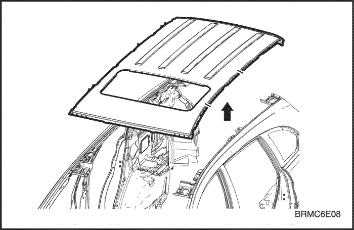

Внимание! Во избежание травм глаз надевайте защитные очки при шлифовке, резке или полировке.
Внимание! Во избежание травм глаз надевайте защитные очки при шлифовке, резке или полировке.
Примечание: Проверьте плотное прилегание кромки. Будьте осторожны, чтобы не изогнуть и не деформировать панель крыши.

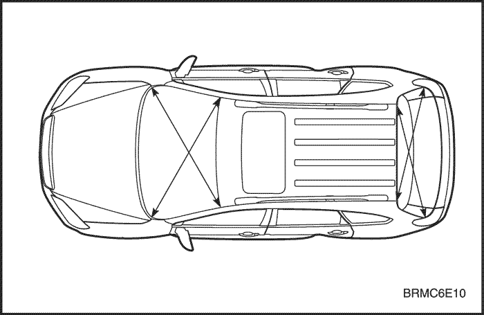

Внимание! Во избежание травм глаз и ожогов пользуйтесь при сварке каской, рукавицами и защитной обувью установленного образца.
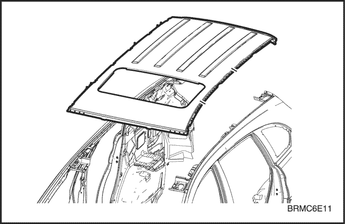

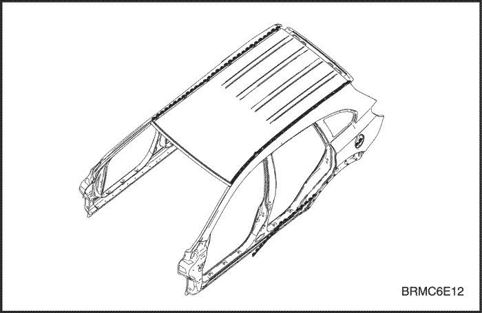

ПАНЕЛЬ ЗАДНЕЙ ЧАСТИ КУЗОВА
ОБЩЕЕ ОПИСАНИЕ
Панель
задней части кузова соединена с панелью боковины, задним лонжероном
нижней части кузова и задней частью пола. Она служит основанием для
крепления задних комбинированных фонарей и других частей и поддерживает
жесткость задней части кузова. Обращайте особое внимание на
перекручивание и параллельность и проверьте установку соответствующих
частей при сварке.
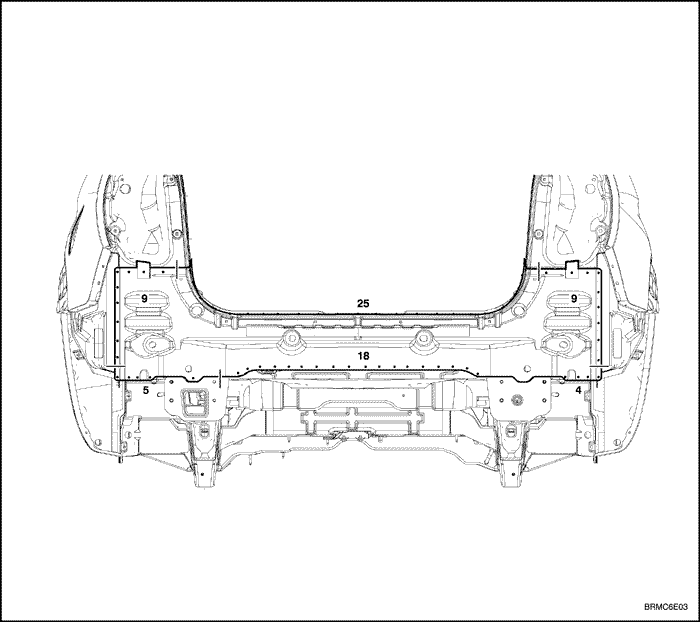

ПРОЦЕДУРА РЕМОНТА
- Снимите соответствующие части.
- Обивка задней части и двери багажника
- Замок двери багажника и связанные с ним детали.
- Задние комбинированные фонари и жгут проводов.
- Задний бампер и связанные с ним детали.
- Другие соответствующие детали.
- Начерно выпрямите и выправьте поврежденное место.
- Осмотреть повреждения и начерно вытянуть и выправить с помощью правильного стенда внутреннюю часть панели боковины, панель ниши запасного колеса, задний лонжерон нижней части кузова и другие поврежденные детали, прежде чем снимать панель задка.
- Прикрепите автомобиль к правильному стенду с помощью нижних захватов, расположенных в обозначенных точках установки домкратов в нижней части внутренней панели боковины.
- Отрежьте и отделите панель задней части кузова.
- Накерните точки вокруг точек сварки на наружной панели боковины задка и панели ниши запасного колеса.
- Специальным инструментом высверлите сварные точки на наружной панели боковины задка и панели ниши запасного колеса.
- Отрежьте панель задней части кузова пневматическим зубилом, оставив на месте сварочные кромки.
- Выровняйте и зашлифуйте неровности от оторванных сварных точек дисковой шлифовальной машиной и заварите все трещины, отверстия и другие дефекты. Если необходимо, также отремонтируйте панель пола.
- Снимите грунтовочное покрытие и герметизирующую ленту.
- Нагрейте грунтовочное покрытие и герметизирующую ленту в местах сварки наружной панели боковины задка и панели ниши запасного колеса с помощью газовой горелки и отделите грунтовочное покрытие и ленту стальным шпателем.
- Отрихтуйте поврежденные смежные части.
- С помощью молотка и оправки отрихтуйте поврежденные части задней части панели боковины и панели ниши запасного колеса.
- Выровняйте сварочные кромки с помощью молотка и оправки.
- Заварите высверленные отверстия.
- Установите новую панель задней части кузова.
- Зачистите обе стороны привариваемых участков панели задней части кузова шлифовальной машиной от краски до стального листа.
- Закрепите правую и левую сторону зажимными устройствами.
- Временно приварите зажатые секции.
- Измерение и проверка
- При установленном заднем бампере измерить багажник по диагоналям, чтобы проверить его на перекручивание или изгиб и убедиться в его правильном положении.
- Временно установите задние комбинированные фонари и багажник, проверьте зазоры и различия уровней.
- Выполните основную сварку.
- Проварите соединения встык дуговой сваркой МИГ или газовой сваркой.
- Приварите заднюю панель точечной сваркой, как показано на рисунке.
- Сначала выполните пробную сварку и проверьте качество сварки.
- Увеличьте количество точек на 20% для свариваемых областей.
- Отшлифуйте места сварки.
- Выровнять места газовой сварки или сварки МИГ дисковой шлифовальной машиной, затем аккуратно, чтобы не деформировать, выровнять выступающие места молотком.
- С помощью молотка и оправки выровняйте кромки задней части панели боковины и продолжения задней части панели пола так, чтобы они плотно прилегали к поверхности панели задней части кузова.
- Наложите герметизирующую ленту. См. раздел 9, "Уплотнение, замазка и шумоизоляция".
- Наложите герметизирующую ленту на соединение задней части панели боковины и вокруг участков задних фонарей на панели задней части кузова.
- Наложите герметизирующую ленту на соединение панели ниши запасного колеса и панели задней части кузова.
- Нанесите грунтовочное покрытие. См. раздел 10, "Предупреждение коррозии".
- Нанести грунтовочное покрытие снизу на соединение и соединенные внахлест участки заднего пола.
- Нанесите краску.
- ПРЕДОСТОРОЖНОСТЬ
- При нанесении лакокрасочных покрытий обеспечьте вентиляцию. Большинство лакокрасочных материалов содержат вредные при вдыхании или проглатывании вещества. Прежде чем открывать емкость с лакокрасочным материалом, прочесть этикетку.
- Избегайте контакта с кожей. При окраске использовать респиратор установленного образца, перчатки, средства защиты глаз и соответствующую одежду.
- Лакокрасочные материалы огнеопасны. Хранить их в безопасном месте, беречь от искр и огня, не курить.
- Установите соответствующие детали.
- Очистить багажник.
- Установка производится в порядке, обратном снятию.
- Проверка и регулировка.
- Проверьте зазоры и различия уровней.
- Проверьте открывание и закрывание замка багажника.
- Проверьте работу всех систем.
- Осмотрите багажник на предмет протечек.
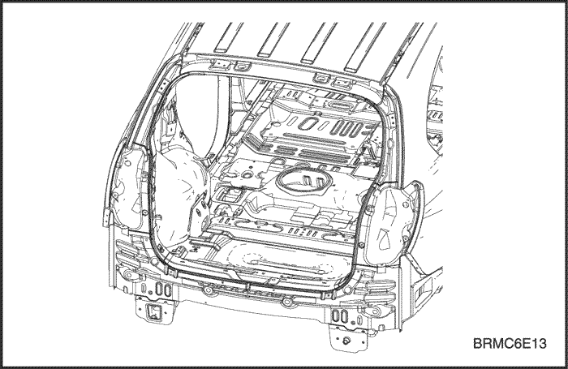

Примечание:
Высверливая отверстия, будьте осторожны, чтобы не просверлить наружную
панель боковины и панель ниши запасного колеса.
Внимание! Во избежание травм глаз надевайте защитные очки при шлифовке, резке или полировке.
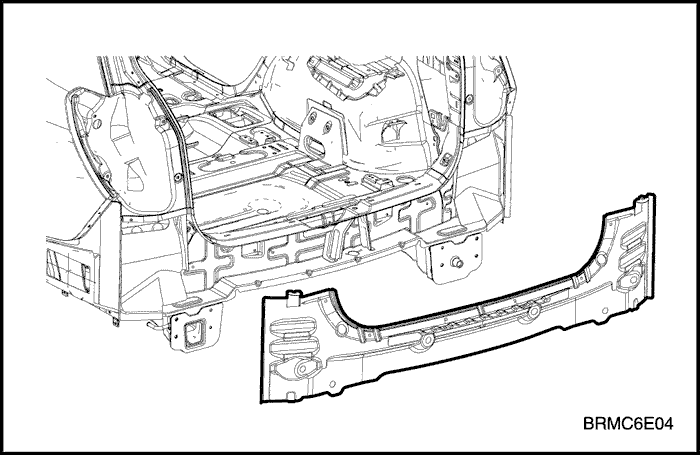

Внимание! Во избежание травм глаз надевайте защитные очки при шлифовке, резке или полировке.
Внимание! Во избежание травм глаз и ожогов пользуйтесь при сварке каской, рукавицами и защитной обувью установленного образца.
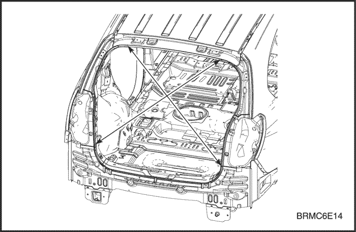

Внимание! Во избежание травм глаз и ожогов пользуйтесь при сварке каской, рукавицами и защитной обувью установленного образца.
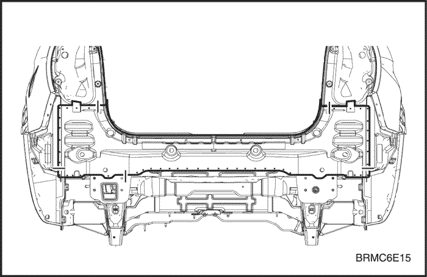

Примечание: Для проверки работы систем использовать указанную контрольную таблицу.
ЗАДНИЙ ЛОНЖЕРОН
ОБЩЕЕ ОПИСАНИЕ
Задний
лонжерон соединен с панелью заднего отсека и ниши запасного колеса и
служит основанием для крепления задней нижней части кузова и других
узлов. Поэтому замена этой детали влияет на регулировку задних колес и
обеспечивает жесткость задней части кузова. При установке используйте
направляющий шаблон или проконтролируйте положение по размерам,
указанным в таблице ремонта кузова. При приваривании арки необходима
особая осторожность.
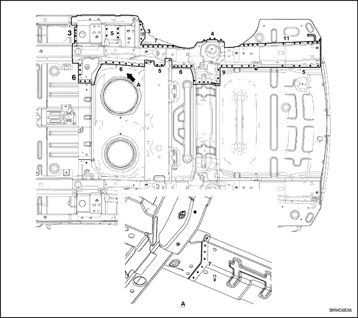

ПРОЦЕДУРА РЕМОНТА
- Снимите соответствующие части.
- Задние сиденья, жгут проводки, относящиеся к ним детали и т.п.
- Начерно вытяните и выправьте поврежденные места приблизительно до исходной формы.
- С помощью захватов прикрепить автомобиль к правильному стенду за горизонтальные швы контактной сварки.
- Прежде чем отрезать поврежденные части, вытяните их до первоначальной формы.
- Если просто отрезать поврежденную часть заднего лонжерона, предварительно не вытянув начерно поврежденный участок, это затруднит ремонт соседних частей.
- Не вытягивайте больше нужного.
- Снимите грунтовочное покрытие и герметизирующую ленту.
- Нагреть грунтовочное покрытие и герметизирующую ленту в местах сварки поврежденных частей с помощью газовой горелки и отделить грунтовочное покрытие и ленту стальным шпателем.
- Отрежьте и отделите задний лонжерон.
- Накерните точки вокруг точек сварки на панели заднего отсека и других связанных частях.
- Специальным инструментом высверлить сварные точки по накерненным местам.
- Отрежьте передний лонжерон пневматическим зубилом, оставив на месте сварочные кромки.
- Выровняйте и зашлифуйте неровности от оторванных сварных точек дисковой шлифовальной машиной.
- Отрихтуйте поврежденные смежные части.
- Заварите высверленные отверстия.
- Отрихтовать колесную арку и другие поврежденные части и выровнять сварочные кромки с помощью молотка и оправки.
- Установите новый задний лонжерон.
- Дисковой шлифовальной машиной зачистите от краски до стального листа обе стороны привариваемых участков заднего лонжерона и панели заднего отсека.
- Прижмите новый задний лонжерон к оставшимся частям зажимными устройствами и плоскогубцами.
- Установите домкрат под конец заднего лонжерона и подоприте его; проверьте размеры, чтобы проконтролировать правильность установки.
- Временно прихватите зажатую секцию сваркой.
- Выполните основную сварку.
- Сварить сколько возможно при установленном направляющем шаблоне.
- Сначала выполните пробную сварку и проверьте качество сварки.
- Увеличьте количество точек на 20% для свариваемых областей.
- Нанесите грунтовочное покрытие. См. раздел 10, "Предупреждение коррозии".
- Нанесите грунтовочное покрытие на соединение и соединенные внахлест участки передней части пола, нижней части лонжерона и внутренние поверхности передней и задней колесной арки.
- Нанесите краску.
- Нанесите антикоррозионные средства. См. раздел 10, "Предупреждение коррозии".
- Нанести антикоррозионные средства на край боковой части передней панели и окрестности петель передней двери.
- Установите соответствующие детали.
- Очистите пассажирский салон.
- Жгут проводки, приборная панель и относящиеся к ним детали.
- Части пассажирского салона.
- Компоненты шасси.
- Двигатель, радиатор и связанные с ними детали.
- Испаритель кондиционера и связанные с ним детали.
- Фары и крылья.
- Капот, решетка радиатора и бампер.
- И т.д.
- Установка производится в порядке, обратном снятию.
- Проверка и регулировка
- Проверьте зазоры и различия уровней.
- Проверьте открывание и закрывание замка капота.
- Отрегулируйте направление света фар.
- Проверьте работу всех систем.
- Проверьте на утечки бензина, масла и жидкостей.
- Осмотрите пассажирский салон на предмет протечек.
Примечание: Снимите в зависимости от того, какая часть повреждена.
Примечание: Проверьте состояние двери и петель.
Внимание! Будьте внимательны, чтобы при нагревании не сжечь детали внутри пассажирского салона.
Внимание! Во избежание травм глаз надевайте защитные очки при шлифовке, резке или полировке.
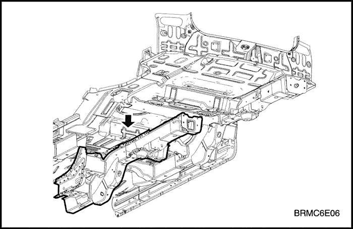

Внимание! Во избежание травм глаз и ожогов пользуйтесь при сварке каской, рукавицами и защитной обувью установленного образца.
Внимание! Во избежание травм глаз надевайте защитные очки при шлифовке, резке или полировке.
Примечание:
Для правильной установки рекомендуется использовать направляющие
шаблоны; проверьте параллельность заднего лонжерона.
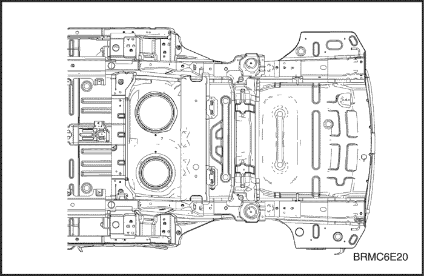

Внимание! Во избежание травм глаз и ожогов пользуйтесь при сварке каской, рукавицами и защитной обувью установленного образца.
Внимание!
При нанесении лакокрасочных покрытий обеспечьте вентиляцию. Большинство
лакокрасочных материалов содержат вредные при вдыхании или
проглатывании вещества. Прежде чем открывать емкость с лакокрасочным
материалом, прочесть этикетку.
Внимание!
Избегайте контакта с кожей. При окраске использовать респиратор
установленного образца, перчатки, средства защиты глаз и соответствующую
одежду.
Внимание! Лакокрасочные материалы огнеопасны. Хранить их в безопасном месте, беречь от искр и огня, не курить.
Примечание:
После установки всех соответствующих частей нанести консистентную
смазку на движущиеся части, залить охлаждающую жидкость, заправить
кондиционер хладагентом и т.п.
Примечание: Для проверки работы систем использовать указанную контрольную таблицу.
ПАНЕЛЬ ПОЛА И ПАНЕЛЬ НИШИ ЗАПАСНОГО КОЛЕСА
ОБЩЕЕ ОПИСАНИЕ
- Герметизация точечной сварки
Панель
пола служит основанием нижней части кузова и играет важнейшую роль для
жесткости нижней части кузова. Чтобы при замене установить панель в
нужное положение, пользуйтесь схемой размеров кузова или схемой ремонта
кузова.
Следите, чтобы панель не была погнута
или деформирована. Сварка должна быть надежной, чтобы сохранить
жесткость нижней части кузова.
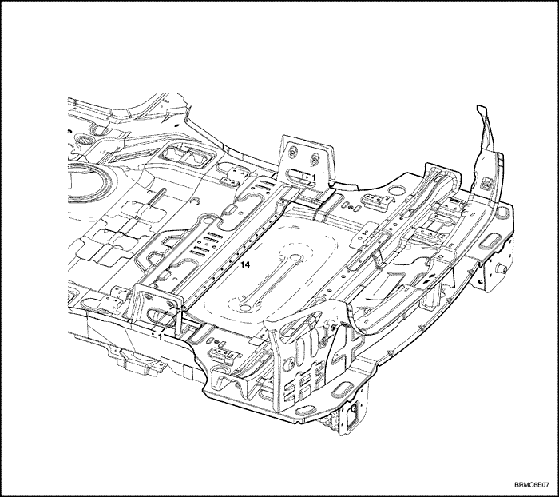

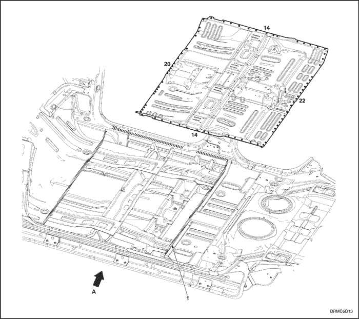

ПРОЦЕДУРА РЕМОНТА
- Снимите соответствующие части.
- Части, которые снимаются при снятии задней панели.
- Задний ремень безопасности и заднее сиденье.
- Глушитель, топливный бак и связанные с ним части.
- Части шасси.
- Другие соответствующие детали.
- Начерно выпрямите и выправьте поврежденное место.
- Осмотреть повреждения и начерно вытянуть и выправить с помощью правильного стенда панель задка, панель боковины, внутреннюю колесную арку, задний лонжерон и другие поврежденные детали, прежде чем снимать панель заднего пола и панель задка.
- Прикрепите автомобиль к правильному стенду с помощью нижних захватов, расположенных в обозначенных точках установки домкратов в нижней части внутренней панели боковины.
- Отрежьте и отделите панель задней части кузова.
- Для снятия панели задней части кузова ее надо отрезать и отделить.
- Отрежьте и отделите панель пола и панель ниши запасного колеса.
- Накернить точки вокруг точек сварки на заднем лонжероне и накладке.
- Специальным инструментом высверлить сварные точки по накерненным местам.
- Отрежьте и отделите остаток панели пола пневматическим зубилом, оставив сварочные кромки.
- Выровнять и зашлифовать неровности от оторванных сварных точек дисковой шлифовальной машиной и заварите все трещины, отверстия и другие дефекты. Если необходимо, также отремонтировать задний лонжерон.
- Снимите грунтовочное покрытие и герметизирующую ленту.
- Нагреть грунтовочное покрытие и герметизирующую ленту в местах сварки с помощью газовой горелки и отделить грунтовочное покрытие и ленту стальным шпателем.
- Отрихтуйте поврежденные смежные части.
- С помощью молотка и оправки отрихтуйте поврежденные части заднего лонжерона нижней части кузова.
- Выровняйте сварочные кромки с помощью молотка и оправки.
- Заварите высверленные отверстия.
- Выровняйте и зашлифуйте неровности от оторванных сварных точек дисковой шлифовальной машиной.
- Перед сваркой удалите краску и грунтовочное покрытие с обеих сторон свариваемой кромки.
- Отрежьте новую панель пола и ниши запасного колеса.
- Дисковой шлифовальной машиной зачистите от краски до стального листа обе стороны привариваемого участка.
- Установите и зафиксируйте новую панель зажимными устройствами.
- Временно прихватите зажатую секцию сваркой.
- Снимите зажимные устройства, временно установите панель задней части кузова и затем проверьте выравнивание, различия уровней и внешний вид.
- Выполните основную сварку.
- Приварить задний пол и поперечину заднего сиденья сваркой МИГ угловым швом, как показано на рисунке.
- Сначала выполните пробную сварку и проверьте качество сварки.
- Увеличьте количество точек на 20% для свариваемых областей.
- Приварите панель задней части кузова.
- Панель задка приваривается при необходимости замены старой панели.
- С помощью молотка и оправки выровнять приваренные точечной сваркой кромки так, чтобы они плотно прилегали одна к другой.
- Наложите герметизирующую ленту и шумоизоляцию. См. раздел 9, "Уплотнение, замазка и шумоизоляция".
- Полностью загерметизировать перекрывающиеся участки заднего пола и сваренные поверхности примыкающей панели и все зазоры.
- Нанесите грунтовочное покрытие. См. раздел 10, "Предупреждение коррозии".
- Нанесите грунтовочное покрытие на заднюю колесную арку и обозначенную часть пола.
- Нанесите краску.
- Установите соответствующие детали.
- Установка производится в порядке, обратном снятию.
- Проверка и регулировка
- Проверьте зазоры и различия уровней.
- Проверить открывание и закрывание замка двери багажника.
- Проверьте работу всех систем.
- Осмотреть багажник на предмет протечек.
Внимание!
Не курите при работе вблизи топливной системы. Берегите топливную
систему от открытого огня. При необходимости снимите топливный бак и
отходящие трубопроводы.
Примечание: Измерьте размеры и сравните с контрольными размерами на схеме ремонта кузова.
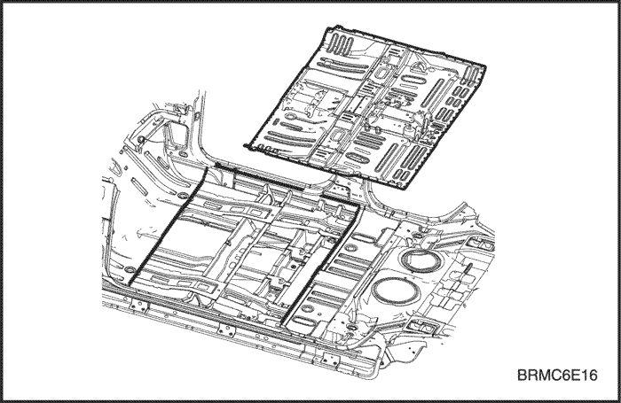

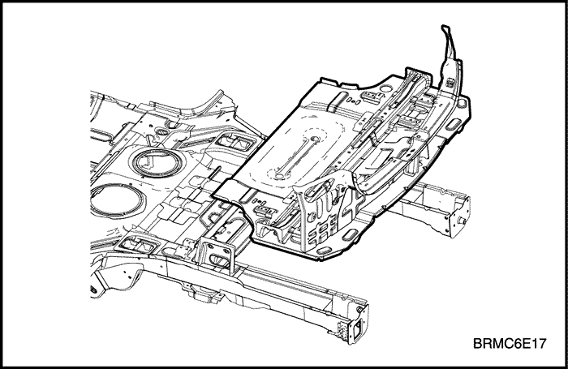

Примечание:
Высверливая отверстия, будьте осторожны, чтобы не просверлить сам
задний лонжерон, продолжение заднего лонжерона или накладку.
Внимание! Во избежание травм глаз надевайте защитные очки при шлифовке, резке или полировке.
Внимание! Во избежание травм глаз и ожогов пользуйтесь при сварке каской, рукавицами и защитной обувью установленного образца.
Внимание! Во избежание травм глаз надевайте защитные очки при шлифовке, резке или полировке.
Примечание:
Для правильной установки рекомендуется использовать направляющие
шаблоны; проверьте параллельность задних лонжеронов.
Внимание! Во избежание травм глаз и ожогов пользуйтесь при сварке каской, рукавицами и защитной обувью установленного образца.
Внимание! Во избежание травм глаз и ожогов пользуйтесь при сварке каской, рукавицами и защитной обувью установленного образца.
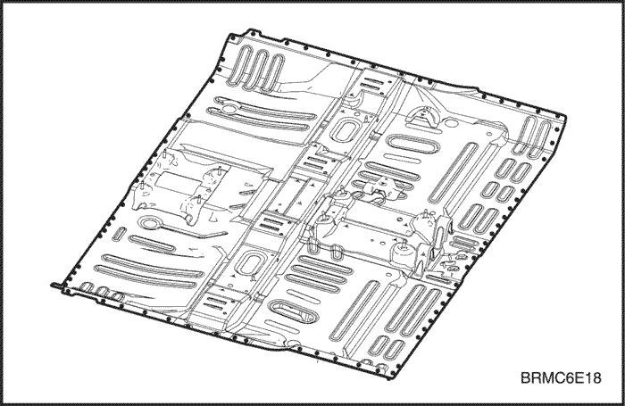

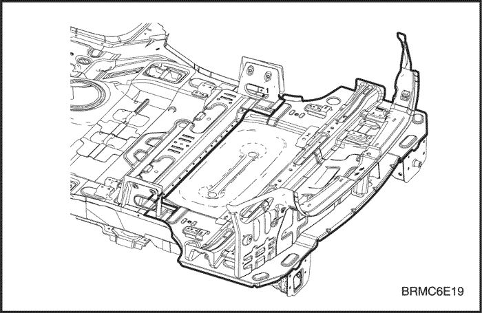

Внимание!
При нанесении лакокрасочных покрытий обеспечьте вентиляцию. Большинство
лакокрасочных материалов содержат вредные при вдыхании или
проглатывании вещества. Прежде чем открывать емкость с лакокрасочным
материалом, прочесть этикетку.
Внимание!
Избегайте контакта с кожей. При окраске использовать респиратор
установленного образца, перчатки, средства защиты глаз и соответствующую
одежду.
Внимание! Лакокрасочные материалы огнеопасны. Хранить их в безопасном месте, беречь от искр и огня, не курить.
Примечание: Для проверки работы систем использовать указанную контрольную таблицу.